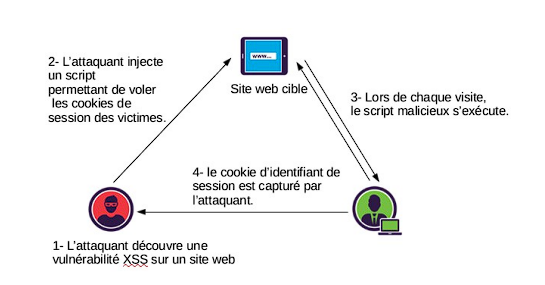
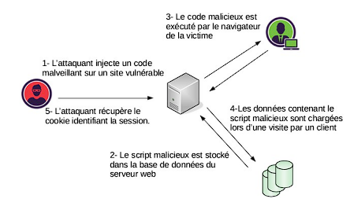

Qu'est-ce que le cross-site scripting (XSS) ?
Le cross-site scripting (également connu sous le nom de XSS) est une vulnérabilité de la sécurité web qui permet à un attaquant de compromettre
les interactions des utilisateurs avec un site web vulnérable grâce à une injection de contenu dans une page (Javascript, Java, etc...).
Il est par exemple possible de rediriger vers un autre site pour de l'hameçonnage ou encore de voler la session en récupérant les cookies.
Les vulnérabilités de type "cross-site scripting" permettent donc à un attaquant de se faire passer pour un autre utilisateur, d'effectuer toutes
les actions que l'utilisateur est en mesure d'effectuer et d'accéder à toutes les données de l'utilisateur.
Si l'utilisateur victime dispose d'un accès privilégié à l'application, l'attaquant peut donc être en mesure de prendre
le contrôle total de toutes les fonctionnalités et données de l'application.
Quels sont les différentes type de failles XSS ?
On en dénombre 3 types :
- Reflected XSS (XSS Réfléchissante), lorsque le script malveillant vient de la requète http actuelle.
- Stored XSS (XSS Persistante), lorsque le script malveillant vient de la base de donnée du serveur.
- DOM-Based XSS (XSS Basée sur le DOM), lorsque le script malveillant est injecté directement dans le DOM (Document Object Model) de la page web.
Reflected XSS
C'est le type le plus courant de faille XSS. Dans ce type de faille, le script malveillant est injecté dans une URL ou un formulaire. Lorsque l'utilisateur ouvre la page web avec cette URL ou soumet le formulaire, le script est exécuté dans le navigateur de l'utilisateur. Cette faille est appelée "réfléchie" car elle ne persiste pas dans la page web.
Stored XSS
Dans ce type de faille, le script malveillant est stocké sur le serveur. Lorsqu'un utilisateur visite la page web vulnérable, le script est récupéré à partir du serveur et exécuté dans le navigateur de l'utilisateur. Cette faille est appelée "stockée" car elle est stockée dans la page web.
DOM-Based XSS
Dans ce type de faille, le script malveillant est injecté dans le DOM (Document Object Model) de la page web. Le DOM est la représentation en mémoire de la page web dans le navigateur. Le script est exécuté lorsqu'un utilisateur interagit avec la page web, généralement en cliquant sur un lien ou en remplissant un formulaire. Cette faille est appelée "DOM-based" car elle ne dépend pas du serveur ou de l'utilisateur, mais du DOM de la page web.